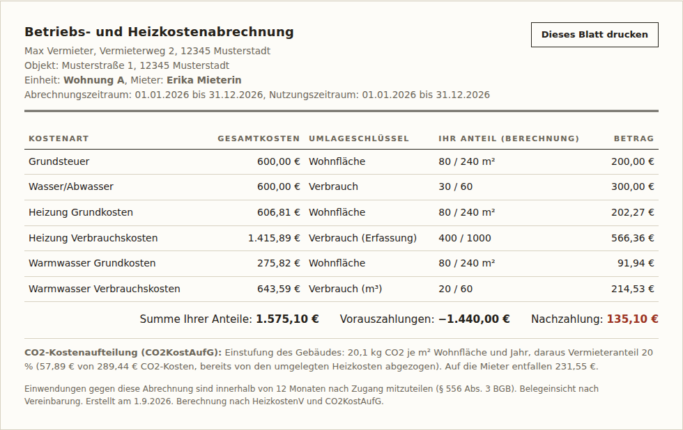

Alle Abrechnungen in einem Durchgang — mit Mieterwechsel, CO2-Stufenmodell und Sammeldruck
Nebenkostenabrechnung Pro ist die Vollversion des kostenlosen Rechners als eigenständige Datei für Ihren Rechner: bis 10 Wohneinheiten, alle Mietverhältnisse auf einmal, unterjähriger Mieterwechsel nach § 9b HeizkostenV und die CO2-Sonderfälle des § 9 CO2KostAufG. Eine HTML-Datei, per Doppelklick im Browser geöffnet — keine Installation, keine Cloud, kein Abo. Ihre Daten bleiben auf Ihrem Gerät.
Sicherer Checkout & Rechnung mit ausgewiesener USt. über Polar (Merchant of Record) · Download sofort nach Zahlung · alle 1.x-Updates inklusive

So sieht das Ergebnis aus: je Mietverhältnis eine formell ordnungsgemäße Abrechnung mit Gesamtkosten, Umlageschlüssel, Rechenweg, Saldo und CO2-Ausweis.
Frei vs. Pro
| Funktion | Kostenlos | Pro (39 €) |
|---|---|---|
| Vollständige Rechenlogik: HeizkostenV 50–70-Split, Warmwasser-Formel § 9, CO2-Stufenmodell, taggenaue kalte Betriebskosten | ✓ | ✓ |
| Gebäude komplett erfassbar (bis 10 Einheiten), Leerstand/Selbstnutzung im Verteilungsmaßstab | ✓ | ✓ |
| Abrechnungen pro Durchgang | 1 Mietverhältnis | alle |
| Mieterwechsel im Jahr (Zwischenablesung; Gradtagszahlen oder Zeitanteil, § 9b HeizkostenV) | — | ✓ |
| CO2-Ausnahmen § 9 CO2KostAufG (Denkmalschutz, Milieuschutz) | — | ✓ |
| Sammeldruck aller Abrechnungen (PDF über Druckdialog) | — | ✓ |
| Daten sichern & wiederladen (JSON-Datei) | — | ✓ |
| Läuft ohne Internet, Daten bleiben lokal | ✓ | ✓ |
So funktioniert es
- Kaufen & herunterladen: Sie erhalten eine ZIP-Datei mit der App (eine HTML-Datei) und einer Kurzanleitung.
- Doppelklick: Die Datei öffnet sich in Ihrem Browser (Windows, macOS, Linux) — ganz ohne Installation und ohne Internet.
- Erfassen & drucken: Zeitraum, Einheiten, Mietverhältnisse, Kosten und Zählerstände eintragen — das Tool erstellt je Mieter die fertige Abrechnung, einzeln oder als Sammeldruck.
Häufige Fragen
Ist die Abrechnung rechtssicher?
Der Rechenkern setzt die Heizkostenverordnung (50–70-Split, Warmwasser-Abtrennung nach § 9 inkl. Korrekturfaktoren, § 9b bei Nutzerwechsel), das CO2-Kostenaufteilungsgesetz (10-Stufen-Modell mit Pflicht-Ausweis) und die formellen BGH-Anforderungen (Gesamtkosten, Umlageschlüssel, Anteil, Vorauszahlungen) um und ist gegen ein juristisch hergeleitetes Kontrollbeispiel centgenau getestet. Die Verantwortung für Eingaben und Versand bleibt beim Vermieter — das Tool ersetzt keine Rechts- oder Steuerberatung.
Welche Systemvoraussetzungen gibt es?
Ein aktueller Browser (Chrome, Edge, Firefox oder Safari) unter Windows, macOS oder Linux. Kein Internet nötig, keine Installation, keine Adminrechte.
Wo liegen meine Daten?
Ausschließlich auf Ihrem Gerät: im Browser-Speicher und in JSON-Sicherungsdateien, die Sie selbst anlegen. Es gibt keinen Server, kein Konto und keine Übertragung.
Bekomme ich Updates?
Ja, alle Updates der Version 1.x sind enthalten — Sie laden die neue Datei einfach über Ihren Kauf-Link erneut herunter. Ihre JSON-Sicherungen lassen sich dort weiterverwenden.
Für wen ist das Tool gedacht?
Für private Vermieter mit 1–10 Wohneinheiten mit zentraler Heizung (Gas, Öl, Fernwärme, Wärmepumpe) oder ohne zentrale Anlage. WEG-Verwaltung und Gewerbeobjekte sind nicht Zielgruppe der Version 1.
Kann ich vorher testen?
Ja — die kostenlose Version enthält die komplette Rechenlogik für ein Mietverhältnis. Wenn das Ergebnis überzeugt, rechnet Pro alle Mietverhältnisse in einem Durchgang.